Module 2: Baseline Configuration and Hardening
Update the server, make sure SSH is available, disable direct root SSH login, and enable the firewall.
What you will complete
- Apply current package updates.
- Confirm SSH is installed and running.
- Enable UFW with only required access.
Background
Baseline hardening starts by reducing unnecessary risk before higher-level services are exposed. Ubuntu Server guidance emphasizes package management, controlled OpenSSH access, and firewall rules as core early controls because they reduce exposure while keeping the machine manageable for administrators [2], [3], [4].
Steps
Update the system
Start by bringing the operating system up to date. This gives you the latest package metadata and reduces the chance that you build the rest of the stack on top of outdated or vulnerable packages.
1. Refresh the package index
- Log in with your normal administrative account.
- Run
sudo apt updateso Ubuntu downloads the latest package lists from its configured repositories.Refresh package listssudo apt update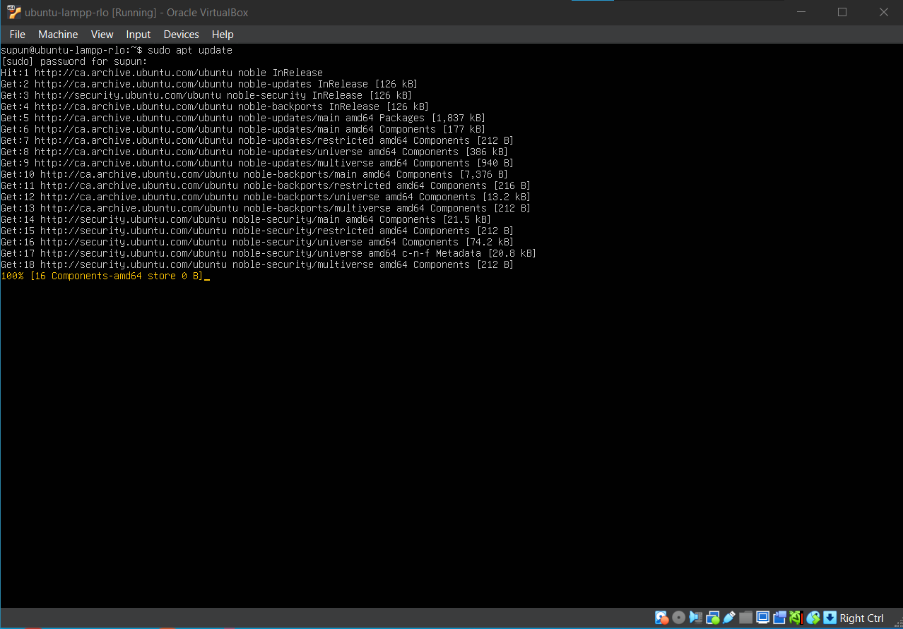
Package index refresh: While sudo apt updateruns, Ubuntu contacts its configured repositories and downloads the latest package metadata. - Read the summary output and make sure the command finishes without repository or network errors. It is normal to see a message showing how many packages can be upgraded once the refresh completes.
2. Install the available upgrades
- Run
sudo apt upgrade -yto install the pending updates.Install available package upgradessudo apt upgrade -y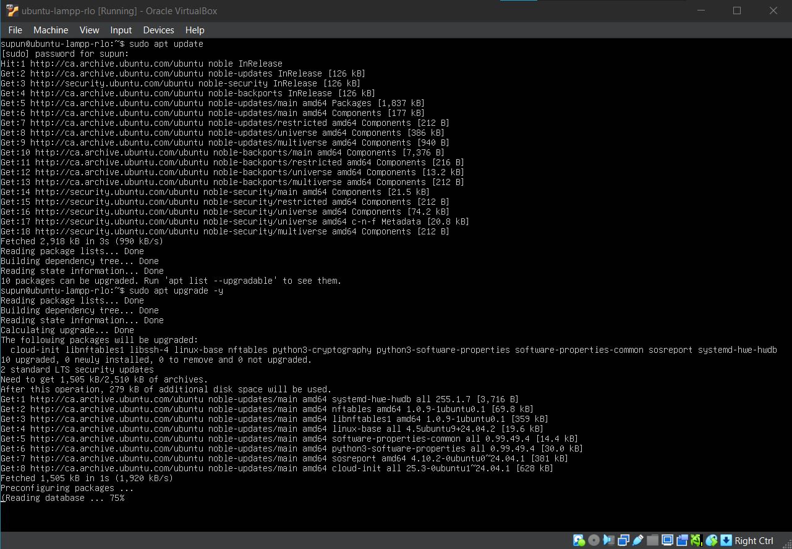
Upgrade start: After reviewing the apt updatesummary, runsudo apt upgrade -yto begin installing the available package updates. - Wait until the upgrade completes fully. Some updates take a few minutes, especially on the first run after installation.
- If the command reports held packages or package lock issues, resolve those before moving on.
3. Confirm the system is ready
- Review the final output for errors.
- If the update process suggests a reboot, note that recommendation and reboot before continuing.
- Keep the terminal open so you can continue with SSH setup immediately after the update.
Install and verify OpenSSH
SSH gives you a standard way to administer the server remotely. Even if you plan to keep using the VM console, it is still useful to verify that the service is installed and healthy.
1. Check whether SSH is already present
- If you selected OpenSSH during the Ubuntu installer, the package may already be installed.
- Run
sudo systemctl status ssh --no-pagerto see whether the service exists and is active.Check the SSH servicesudo systemctl status ssh --no-pager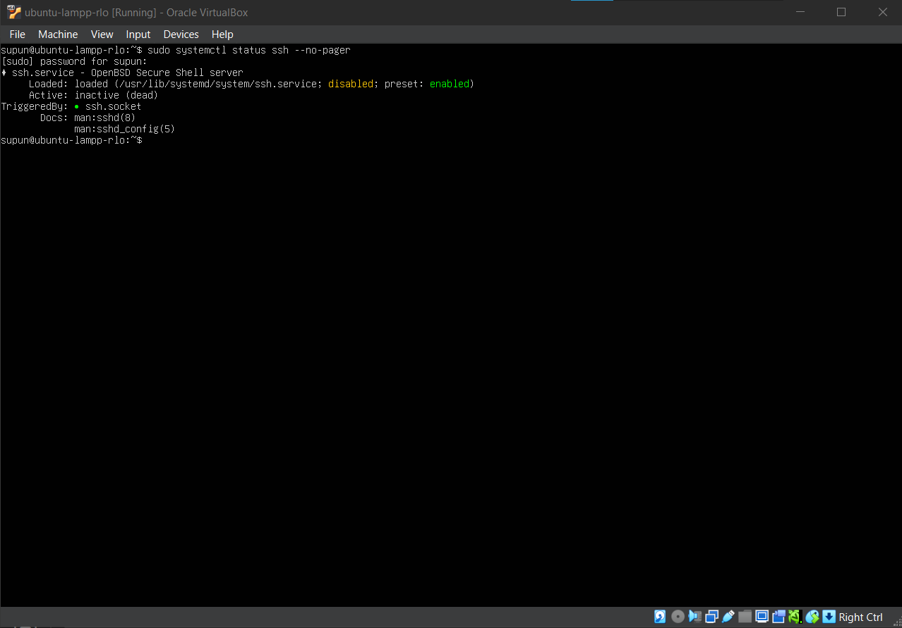
Initial SSH status: On Ubuntu Server, it is possible to see ssh.servicepresent but inactive (dead) while it is still associated withssh.socket. - If the service is missing, continue with the install step below.
2. Install the server package if needed
- Run
sudo apt install openssh-server -y.Install OpenSSH if neededsudo apt install openssh-server -y - Wait for the installation to finish and watch for package errors.
- Run the status command again to confirm the service now exists.
3. Verify the service state
- Confirm that the
sshservice shows as active (running). If it instead shows inactive (dead), bring it up explicitly withsudo systemctl enable --now ssh.service.Enable and start SSHsudo systemctl enable --now ssh.service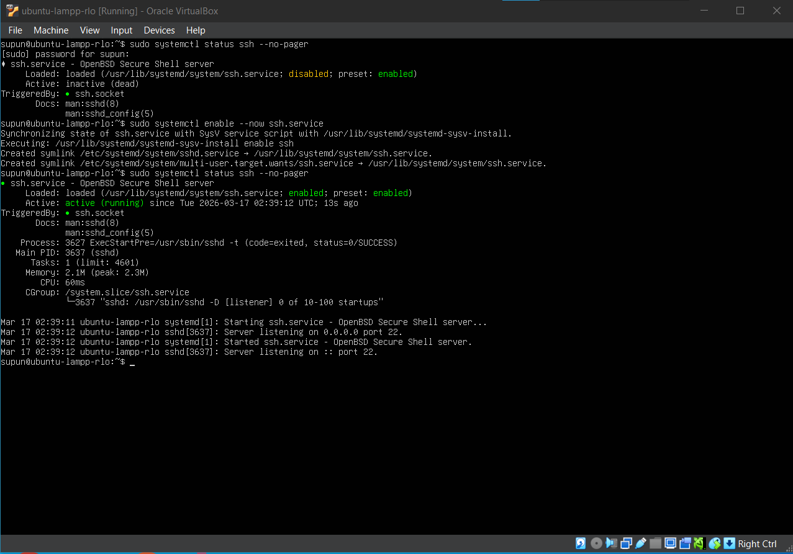
SSH activated: If the service is not already running, enable and start it, then confirm that sudo systemctl status ssh --no-pagerreports active (running). - If the service still fails to start, investigate the error before making configuration changes.
- Do not move on until you know SSH is installed and healthy.
Apply one safe SSH hardening step
Use a small, low-risk hardening change that improves the baseline without making the server harder to recover. In this module, the goal is only to block direct root SSH login.
1. Create a drop-in configuration file
- Use the directory
/etc/ssh/sshd_config.d/instead of editing the main SSH config directly. - Create a file such as
60-hardening.confand add the linePermitRootLogin no.Create a drop-in hardening fileprintf 'PermitRootLogin no ' | sudo tee /etc/ssh/sshd_config.d/60-hardening.conf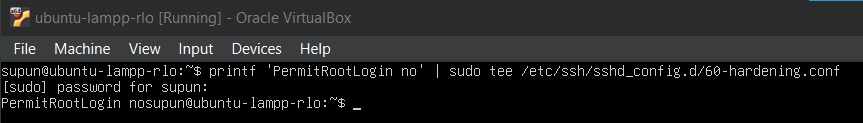
Hardening file created: This command writes PermitRootLogin nointo the SSH drop-in file used for the hardening change. - This keeps the change small, easy to review, and easy to remove if something goes wrong.
2. Validate before restarting
- Run
sudo sshd -tto check the SSH configuration syntax.Validate SSH configurationsudo sshd -t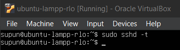
Validation check: A successful sudo sshd -trun usually returns no output, which means the SSH configuration syntax is valid. - If the command returns no errors, the configuration is valid.
- If it reports a problem, fix the file first. Do not restart SSH until the validation command succeeds.
3. Restart the service carefully
- Restart SSH with
sudo systemctl restart ssh.service.Restart SSH after validationsudo systemctl restart ssh.service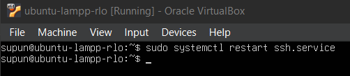
Service restarted: If the restart succeeds cleanly, sudo systemctl restart ssh.serviceoften returns to the prompt without additional output. - Run the status command again to confirm the service came back up cleanly.
Confirm SSH restarted cleanly
sudo systemctl status ssh --no-pager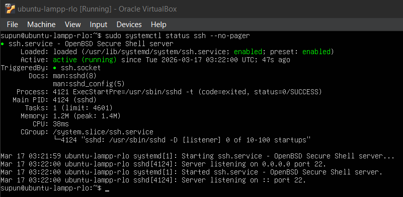
Post-restart status: After the restart, check that ssh.servicereports active (running) before moving on. - Keep your VM console available while testing changes so you are not relying only on SSH access during hardening.
Enable the firewall for SSH only
Enable Ubuntu's uncomplicated firewall after you know SSH is installed. At this stage, allow only management access. Web traffic will be opened later when Apache is ready.
1. Review the available firewall profiles
- Run
sudo ufw app listto see the application profiles installed on the system.List application firewall profilessudo ufw app list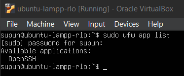
Available profiles: Use sudo ufw app listto confirm that theOpenSSHfirewall profile is available before enabling UFW. - Look for the
OpenSSHprofile in the list.
2. Allow SSH before enabling the firewall
- Run
sudo ufw allow OpenSSH.Allow SSH by application profilesudo ufw allow OpenSSH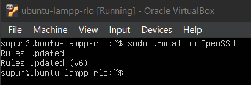
SSH rule added: The firewall should confirm that the OpenSSHrule was added for both standard and IPv6 traffic. - This creates a rule for SSH so you do not block your own management access when the firewall turns on.
3. Turn on UFW and verify the rules
- Run
sudo ufw enableand confirm the prompt.Enable the firewallsudo ufw enable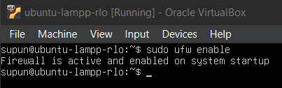
Firewall enabled: Once enabled, UFW should report that the firewall is active and will start automatically with the system. - Run
sudo ufw status verboseimmediately afterward.Review the firewall statussudo ufw status verbose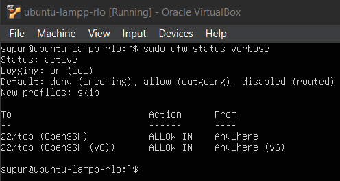
Firewall status: Review the verbose status output to confirm that UFW is active and that the OpenSSHrule is allowed. - Confirm the firewall is active and that the OpenSSH rule appears in the allowed list.
Troubleshooting
| Issue | What to check |
|---|---|
| APT is locked by another process | Wait for unattended package activity to finish, then rerun the update commands. |
| sshd validation fails | Undo the last config change, check for typos in the drop-in file, then run sudo sshd -t again. |
| SSH stops working after restart | Use the VM console directly, remove the bad config file, validate again, and restart the service. |
Evidence to capture
- A screenshot or terminal capture showing
sudo apt updateandsudo apt upgrade -ycompleted without errors. - A screenshot of
sudo systemctl status ssh --no-pagershowing that the SSH service is active. - A screenshot of the SSH hardening drop-in file or a terminal capture confirming
PermitRootLogin nowas added. - A screenshot or terminal capture showing
sudo sshd -tsucceeded before the SSH service was restarted. - A screenshot of
sudo ufw status verboseshowing that the firewall is active and theOpenSSHrule is allowed.